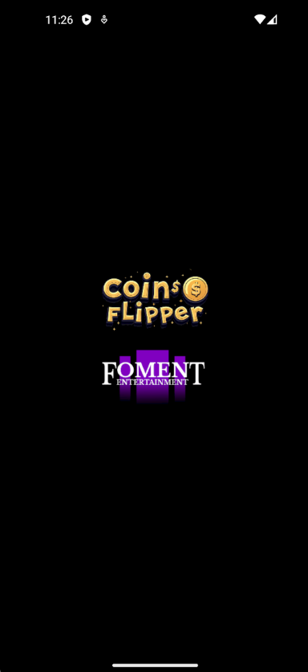
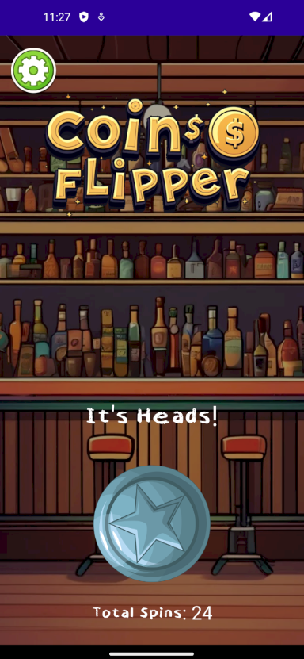
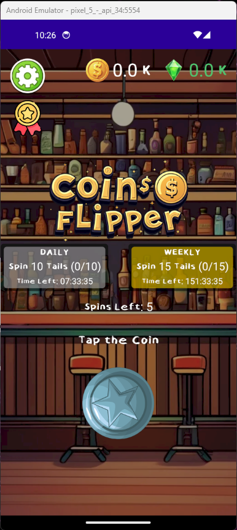
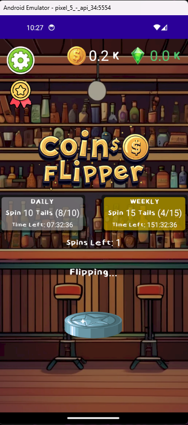
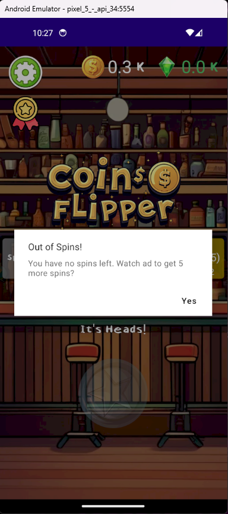
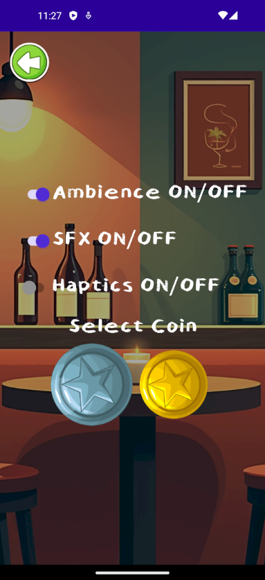
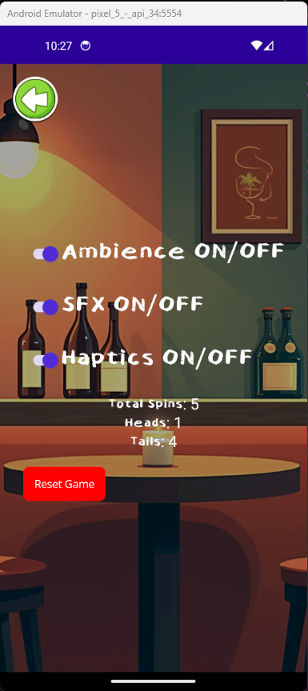
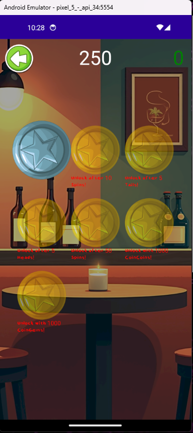

Jani - UI Programmer & Assets
Teemu - Project Lead
Jocke - Workflow Manager
Status: Finished /Spring 2025
Total work hours: 80
Tools: .NET MAUI, Visual Studio, GIMP, imgflip.com, Canva
Scripting: C#
AI: FullJourney.ai, ChatGPT, udio
Coin Flipper is mobile UI application project done as part of a course on Marketing. Our goal was to learn to use and implement new AI solutions including language models, music generators and image generators.
One of two satirical trailers made for the game in the style of modern mobile game ads, which mainly utilize generated speeches, unrealistic gameplay and loads of visual and sound effects to overload the user's senses.
The actual game was intended to be as simple as possible: the idea to flip a coin on an app in this world where physical pocket change is all but fleeting. The project involved applying previous skills as well as broadening of my skillset in order to make a functioning product.
The game was developed using Microsoft's .NET Maui environment. First a screen for flipping the virtual coin was required. The flipping was done using a gif that plays for a random short amount of time giving a random result of either heads or tails. A settings menu was implemented to give the user control over sounds and haptic feedback. As development continued, new features were added such as currency counters, stats,, unlockables and daily and weekly challenges.







